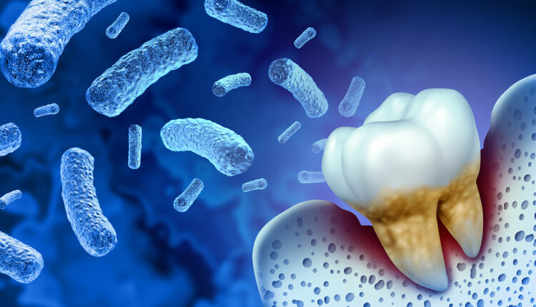

5. Porphyromonas gingivalis

Características Generales
Porphyromonas gingivalis es considerada uno de los principales patógenos periodontales.
Morfología
- Bacilo Gram negativo.
- Anaerobio estricto.
- Inmóvil.
- No forma esporas.
- Crecimiento lento.
- Produce pigmentación negra en algunos cultivos.
Hábitat
- Surco gingival.
- Placa subgingival.
- Bolsas periodontales profundas.
Factores de Virulencia (P. gingivalis)
- Gingipaínas: Enzimas proteolíticas que destruyen colágeno, fibronectina, inmunoglobulinas y proteínas del complemento. Son consideradas el principal factor de virulencia de esta bacteria.
- Fimbrias: Permiten la adhesión a tejidos, formación de biofilm y colonización bacteriana.
- Cápsula: Protege a la bacteria contra la fagocitosis y facilita su supervivencia.
- Lipopolisacárido (LPS): Estimula una intensa respuesta inflamatoria y la liberación de citocinas.
- Hemaglutininas: Favorecen la adherencia celular y la obtención de nutrientes.
6. Tannerella forsythia

Características Generales
Anteriormente conocida bajo la clasificación taxonómica de Bacteroides forsythus.
Morfología
- Bacilo Gram negativo.
- Anaerobio estricto.
- Pleomórfico.
- Crecimiento lento.
Hábitat
- Placa subgingival.
- Bolsas periodontales profundas.
Factores de Virulencia (T. forsythia)
- Capa S (S-Layer): Facilita la adhesión, colonización y la debida protección contra el sistema inmune.
- Proteína BspA: Participa activamente en la invasión tisular y en la inflamación periodontal.
- Proteasas: Degradan proteínas estructurales de los tejidos periodontales.
- Metabolitos Tóxicos: Provocan daño celular directo en el hospedero.